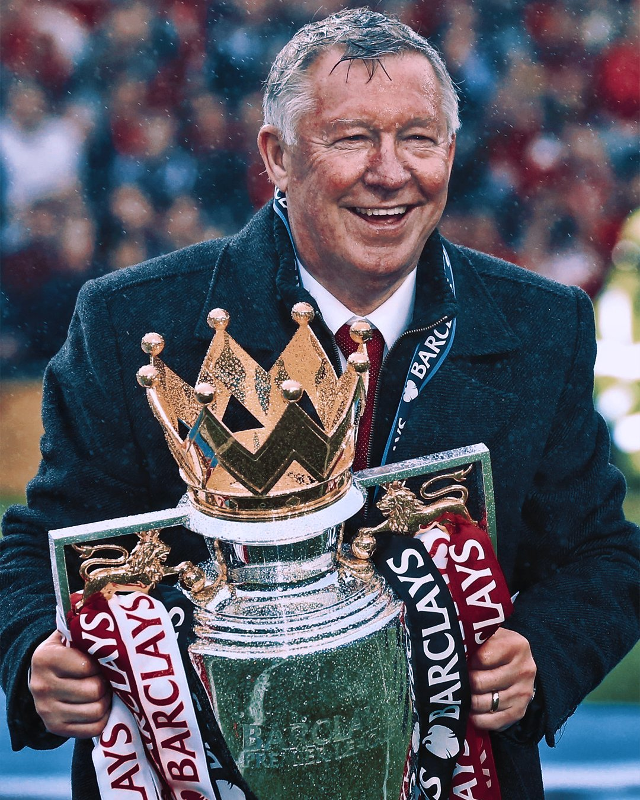
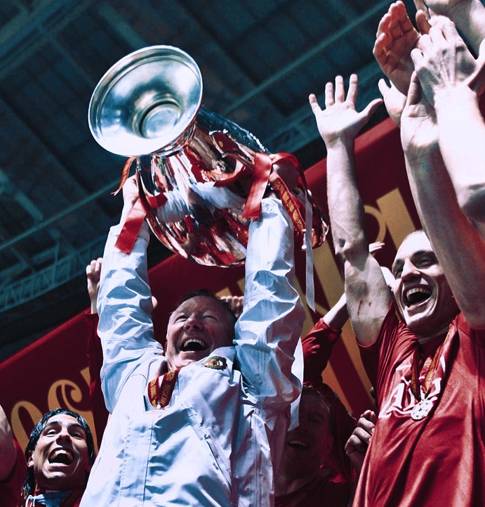
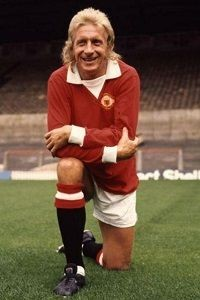
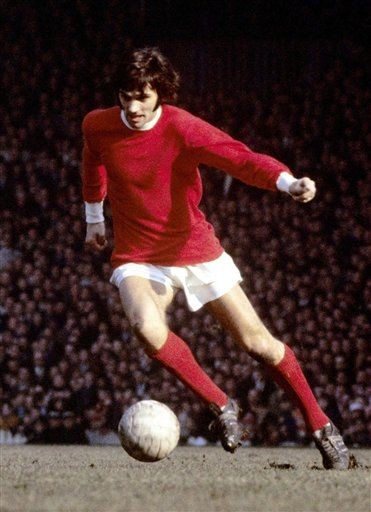
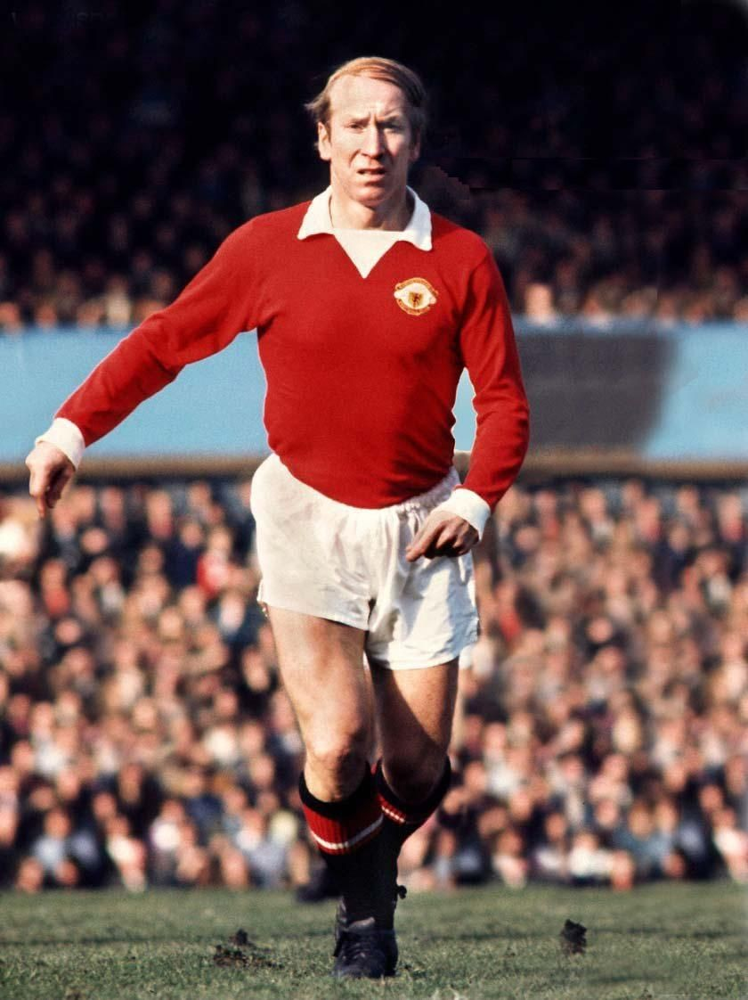
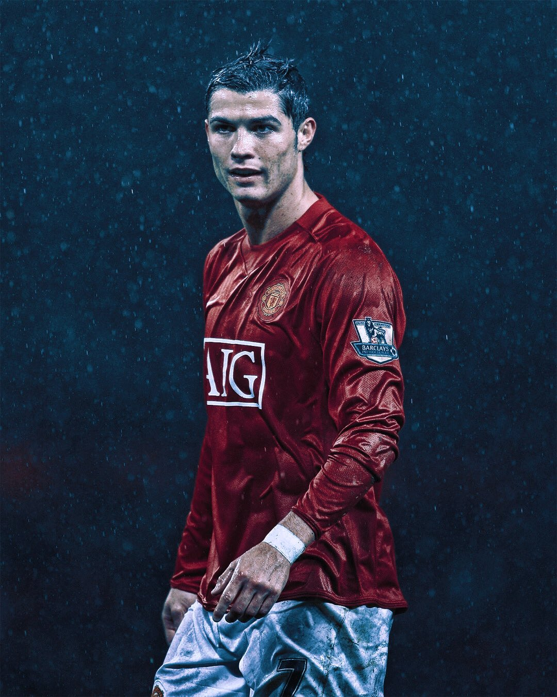
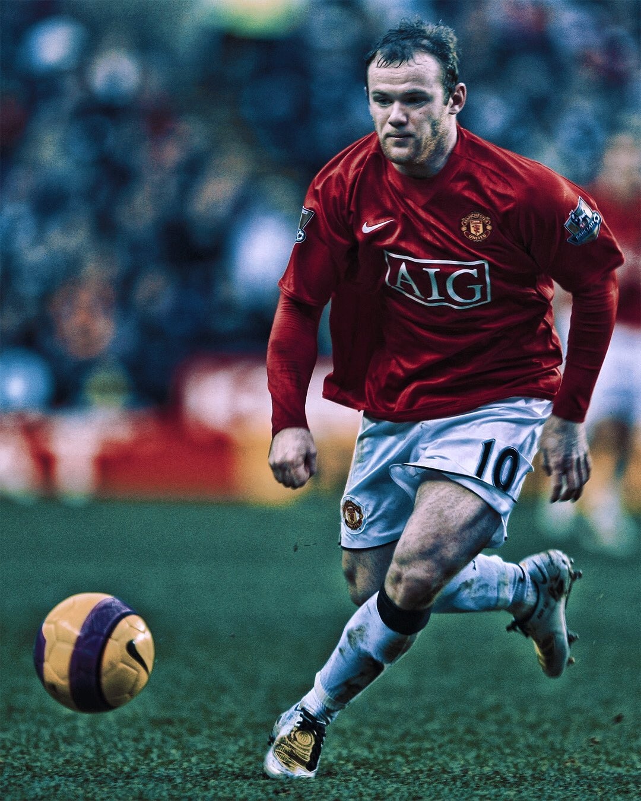
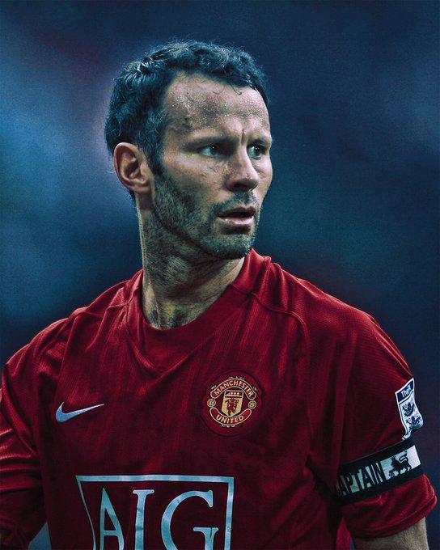
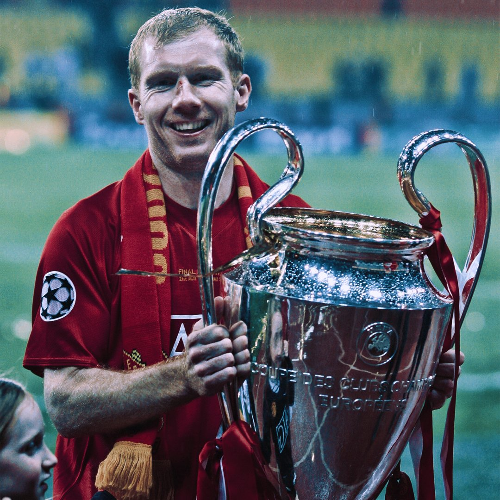

MANCHESTER UNITED
The RED DEVILS
Explore
 
The best there’s ever been? Yes, he (Alex Ferguson) is nothing less than fantastic.
— Sir Bobby Charlton
TROPHY ROOM
PREMIER LEAGUE
TROPHIES WON
13
CHAMPIONS LEAGUE
TROPHIES WON
3
EUROPA LEAGUE
TROPHIES WON
1
SUPER CUP
TROPHIES WON
1
FA CUP
TROPHIES WON
12
COMMUNITY SHIELD
TROPHIES WON
21
Ballon Dor Winners At ManUtd

DENIS LAW
Year 1964
Ballon D'ors Won : 1

GEORGE BEST
Year 1968
Ballon D'ors Won : 1

BOBBY CHARLTON
Year 1966
Ballon D'ors Won : 1

CRISTIANO RONALDO
Year 2008
Ballon D'ors Won : 1
TOP 3 GOAL SCORER OF MANUTD

WAYNE ROONEY
GOALS SCORED - 253
BOBBY CHARLTON
GOALS SCORED - 249
DENIS LAW
GOALS SCORED - 237
PLAYERS WITH HIGHEST APPEARANCEs

RYAN GIGGS
APPEARANCES - 963
BOBBY CHARLTON
APPEARANCES - 758

PAUL SCHOLES
APPEARANCES - 718
FAMOUS FAN CHANT
Glory glory Man united,
Glory glory Man united,
Glory glory Man united,
As the REDS go marching on on on!
PHOTO GALLERY